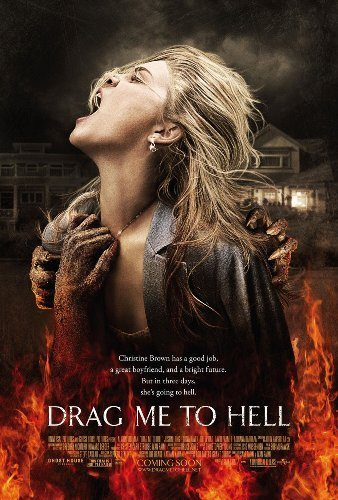

Dhruva's Favorite Horror Movies

Sinster
This movie is about a man who hasn't made a best seller book in many years.
To get closer to an idea to his next book, he moves into a victim's home
and soon he realizes there is a supernatural force in the house.
This movie is one of my all time favorite horror movies because of it's interesting plot line.
This movie has a plot line that is very "realistic" and humanly which is one of the reasons why it is scary.
Drag Me To Hell
The movie starts off when Christine Brown denies a woman to a home extension loan.
The woman get furious because her life is falling apart and decides to puts a cruse on
Christine and turns her life into actual hell. Every scene in the movie is entertaining and there
are endless amount of jump scares.This movie is intriguing and disturbing movie at the same time.
I would reccomend this movie if you are up for a challenge.
Sinister 2

A mother of twins move into a new house to escape her abusive husband. Dylan,
one of the twins, starts to get visits from the ghost. The ghost's
objective is to possess innocent children in order to make them kill their family. I thought,
it was well scripted because they structured the movie in a very realistic way.
The fact that they had twins play the roles of Dylan and Zach made it even more worse.